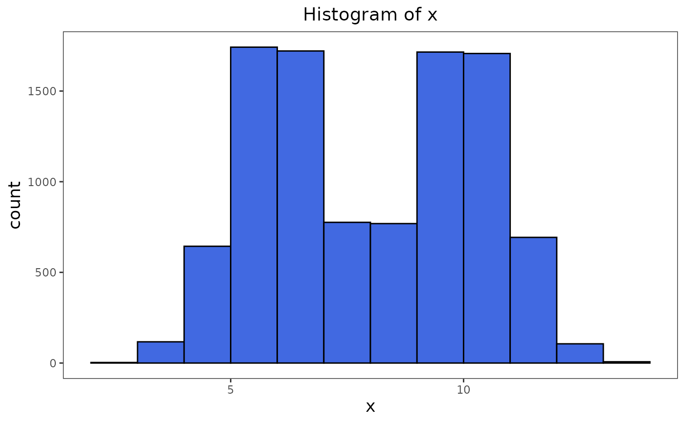
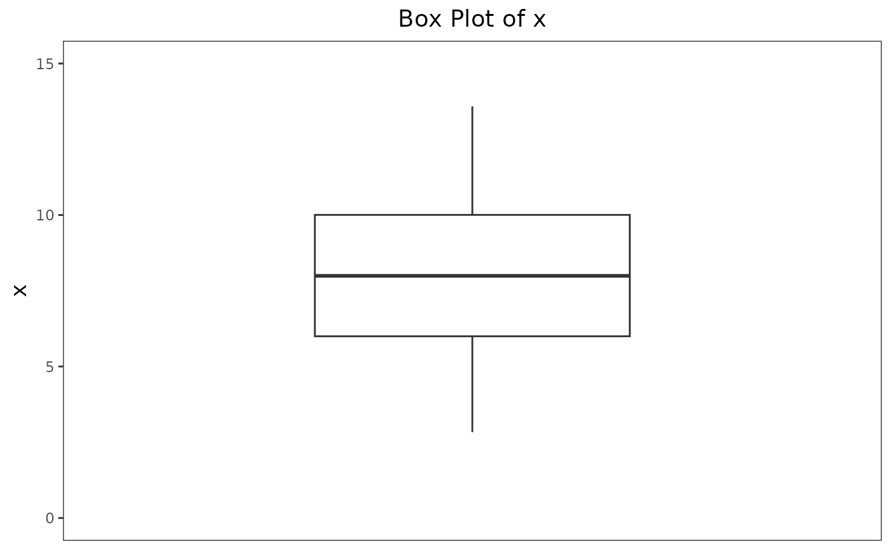
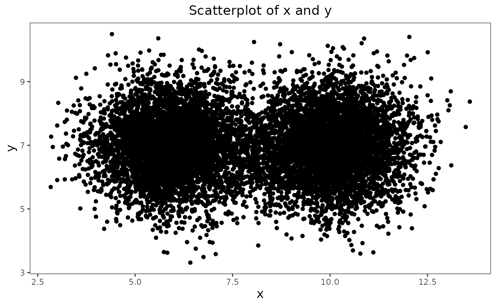
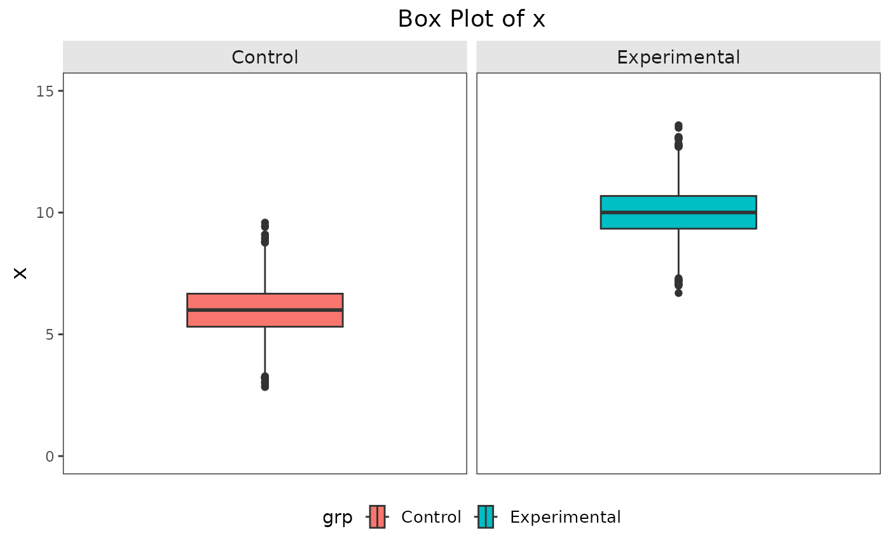

Customized, clean theme for any ggplot2 graph.
Examples
sample_dat <- data.frame(x = c(rnorm(5000, mean = 10, sd = 1),
rnorm(5000, mean = 6, sd = 1)),
y = rnorm(10000, mean = 7, sd = 1),
grp = c(rep("Experimental", 5000),
rep("Control", 5000)))
# Histogram example
sample_dat |>
ggplot2::ggplot(ggplot2::aes(x)) +
ggplot2::geom_histogram(binwidth = 1, fill = "royalblue", color = "black", boundary = 1) +
ggplot2::labs(title = "Histogram of x") +
theme_custom()

# Box plot example
sample_dat |>
ggplot2::ggplot(ggplot2::aes(x)) +
ggplot2::geom_boxplot() +
ggplot2::labs(title = "Box Plot of x") +
ggplot2::scale_y_discrete(name = NULL) +
ggplot2::xlim(0, 15) +
ggplot2::coord_flip() +
theme_custom()

# Scatterplot example
sample_dat |>
ggplot2::ggplot(ggplot2::aes(x, y)) +
ggplot2::geom_point() +
ggplot2::labs(title = "Scatterplot of x and y") +
theme_custom()

# Sample plot with faceting and legend
sample_dat |>
ggplot2::ggplot(ggplot2::aes(x, fill = grp)) +
ggplot2::geom_boxplot() +
ggplot2::scale_y_discrete(name = NULL) +
ggplot2::labs(title = "Box Plot of x") +
ggplot2::coord_flip() +
ggplot2::facet_wrap(~grp) +
ggplot2::xlim(0, 15) +
theme_custom()
